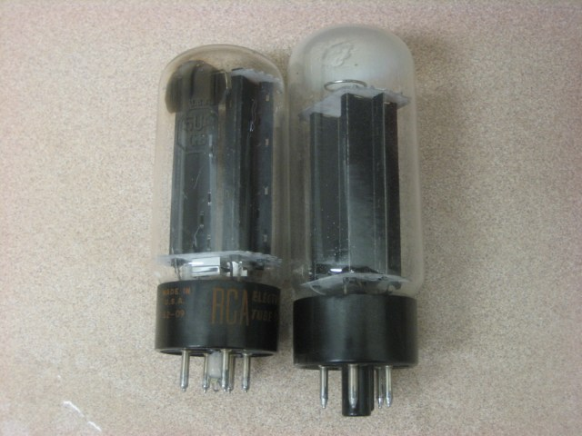
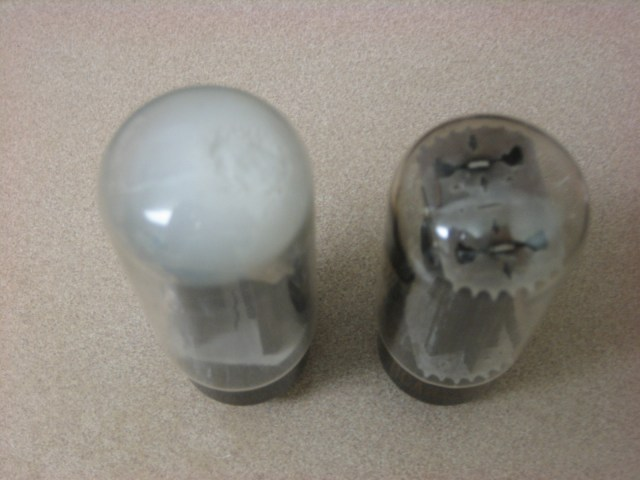

Duncan amp restore – NOS rectifier tube
I’ve gotten back to the Duncan amp restoration project this weekend by grabbing a replacement for my burned out rectifier tube.
I had the amp on the bench at the Hacker Dojo a few weeks ago, and with the help of my buddy Fred, we figured out that despite my measuring 600v in some places and the rectifier tube heating up, I wasn’t actually getting the B+ voltage supply for the amp.
It turns out that some parts of the amp use diode rectification and the power output stage uses the tube rectifier. Kind of a cool design I suppose.
I grabbed a new old stock RCA 5U4 rectifier tube from Halted Specialties here in Sunnyvale. In the picture here you can see the no-name (literally, there are no markings) tube next to the new RCA tube.

The clue that my tube was bad should have been the white getter visible at the top of the old tube. Here is an overhead shot so you can see how bad it was. The getter is a bit of barium that is added to the inside of the tube to scavenge any gas that is left inside of the tube after it is evacuated. The getter turns white when it reacts (oxidizes) and so you can see that this tube probably has completely lost vacuum. I’m surprised that it heated up at all without the heater completely burning out.
